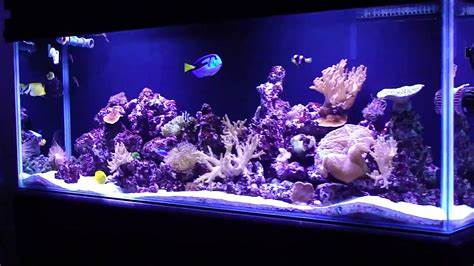

Los primeros acuarios marinos tropicales eran solo de peces, con peces payaso, damiselas y pomacántidos. Presentaban las mismas dificultades que los peces tropicales de agua dulce, y algunas más.

Los peces marinos son más sensibles a las variaciones: en general, el mar es un medio mucho más estable que cualquier río o lago. Además, existe el agravante del agua de mar, que hay que ir al mar a por ella, o prepararla a base de agua dulce y sales marinas (muy diferente a la sal común)..
El avance en el conocimiento y el desarrollo de la cría de peces, la tecnología y las sales marinas hizo que se popularizasen los acuarios marinos a finales de los años 1980. En la actualidad es posible montar un acuario de arrecife doméstico, algo impensable antes de los años 1980. La tendencia actual en acuarios de arrecife es la de limitar el número de peces e incrementar el volumen de roca viva (sustrato rocoso poroso colonizado por infinidad de pequeños microorganismos) y de otros invertebrados, tales como cnidarios (corales,2 anémonas...) y moluscos (caracoles, bivalvos...). Algunos complementos tecnológicos importantes en un acuario marino, sobre todo si en él se trata de representar un ecosistema de arrecife, son la iluminación de alta intensidad y espectro continuo (conseguida generalmente con lámparas de descarga3 de halogenuros metálicos) y la espumación cíclica del agua, mediante un dispositivo denominado skimmer o espumador4 que elimina residuos orgánicos mediante separación fraccionada de la espuma producida en una columna, por la cual pasa continuamente el agua del acuario.